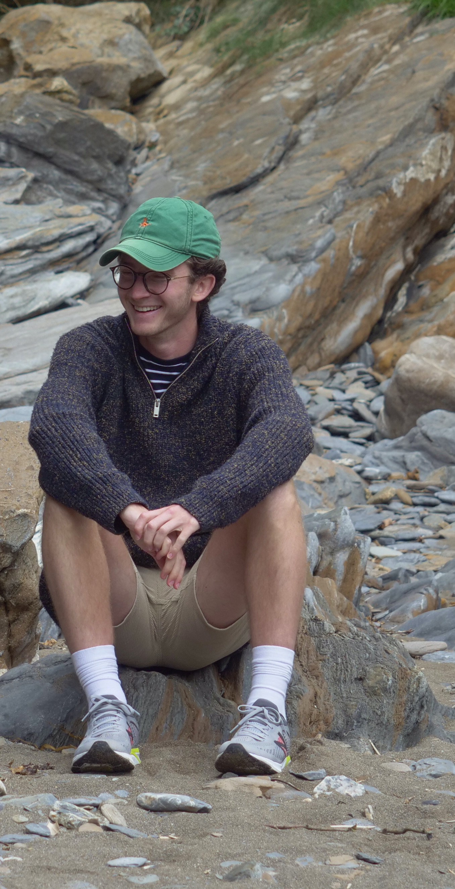

About
I am videographer and video editor, and founder of Jack Williams Creative. After graduating from Bath Spa University in Film and television Production, I started my career at the beginning of 2019, creating social media content for a YouTube and Instagram cookery channel. I went onto find a brilliant opportunity as a Videographer, Video Editor and Photographer with White Villa Films, becoming a core member of the team over the past year.
During my time at White Villa Films they have gone on to win 'Wedding/Event Videographer of the Year' at the Bristol Prestige 2020 Awards.
I have now decided to take on my own clients alongside others at White Villa Films.
Contact me via my email - jackwilliamscreative@gmail.com
